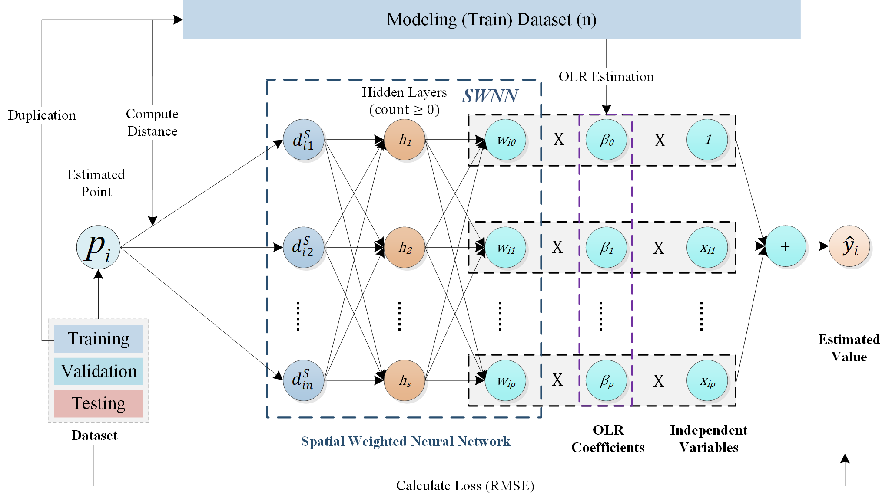
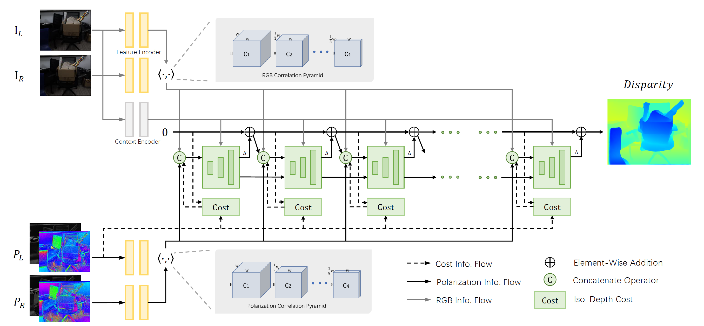
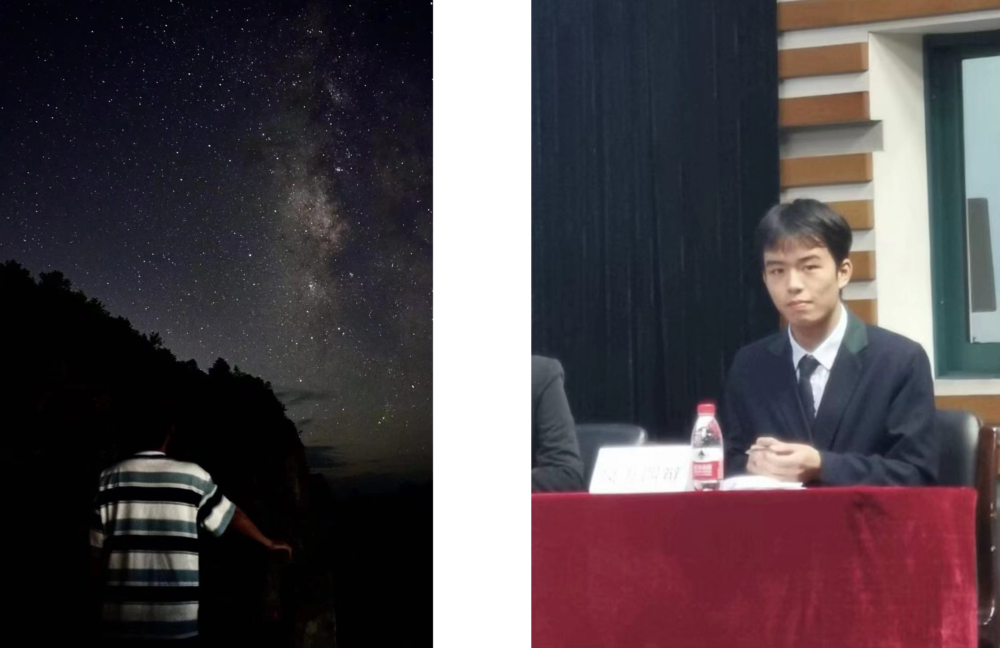
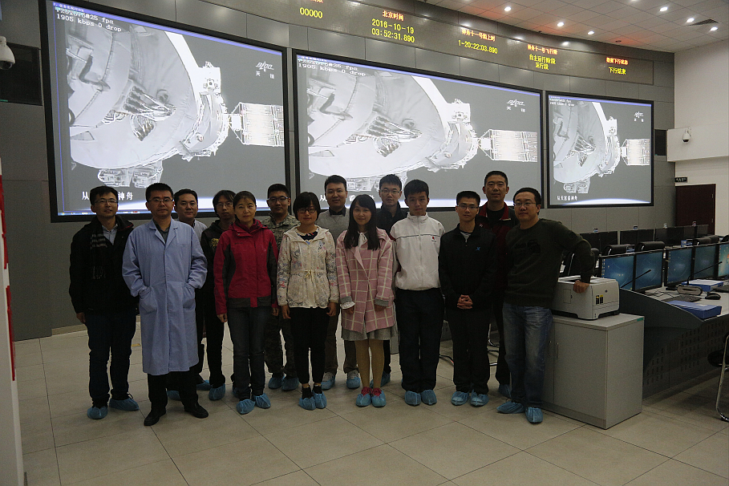

Zimo Wang
Hi, I am Zimo Wang 王子墨, a Data Science Ph.D. student at University of California, San Diego. I am fortunate to be advised by Professor Tzumao Li to explore various problems in Computer Graphics, especially with a focus on statistical methods for differentiable and inverse rendering.
I am excited to conduct research which is effectively inspired by mathematics and powerful for tangible graphics applications. Feel free to contact me if you are interested in my research or have any questions.
Education
2023 - Now: Data Science PhD Student, University of California San Diego
2019 - 2023: Majoring in Geographical Information Science, Statistics, Zhejiang University
2019 - 2023: Minoring in Computer Science and Technology, Zhejiang University
Research
A House Price Valuation Model Based on Geographically Neural Network Weighted Regression

Zimo Wang, Yicheng Wang, Sensen Wu, Zhenhong Du. ”House Price Valuation Model Based on Geographically Neural Network Weighted Regression: The Case Study of Shenzhen, China” ISPRS International Journal of Geo-Information 11, no. 8: 450. Published. 2022.
Advisor: Sensen Wu and Zhenhong Du | Zhejiang Provincial Lab. of Geographical Information Science
Deep Polarimetric Stereo Depth Estimation

Chaoran Tian, Weihong Pan, Zimo Wang, Mao Mao, Guofeng Zhang, Hujun Bao, Ping Tan, Zhaopeng Cui. ”DPS-Net: Deep Polarimetric Stereo Depth Estimation” IEEE International Conference on Computer Vision. Published. 2023.
Advisor: Zhaopeng Cui | State Key Laboratory of CAD&CG
Hobbies




Photography
I enjoy all kinds of music, ranging from classical to popular. I can play some simple guitar pieces, and I am a violin amateur. At Zhejiang University, I have taken various music courses and lectures, including solfeggio, violin, and western music history. Musics inspires my creativity and cheers me up, helping me learn and study better.
Although I don't study astronomy anymore, I also engage in stargazing activities. I'd love to wander under the starry night sky in the countryside, take some photos for the eternal mystery. If you go out with me, I could point out constellations, and even calculate the calendar and locate ourselves with the guidance of stars. I believe that will be a fantastic experience.
Moreover, I'm a ping-pong fan in the school, keeping getting schoolwide prizes for ping-pong games since I was a child. Maybe one day we can have a game of ping-pong~